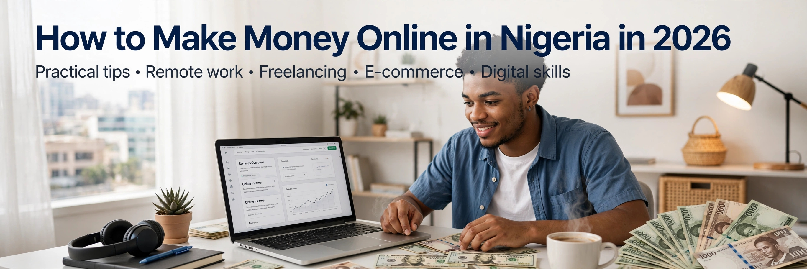

Published: October 10, 2026 | By Godstime
Making money online in Nigeria is no longer a dream. In 2026, thousands of Nigerians are earning dollars from home using just their smartphone and internet connection.
In this detailed guide, I will show you 5 proven and legit ways to make money online in Nigeria that actually work. No scam, no fake promises.
Blogging remains one of the best ways to make passive income. You create a website like this one, you write helpful articles that people search for on Google, and Google shows ads on your site. When visitors click or view the ads, you earn money.
To start blogging, you need to choose a niche you love. It could be news, technology, health, business, or entertainment. Then you write at least 20-30 quality articles of 800+ words. Apply for Google AdSense like I just did, and once approved, you can earn $100 to $1000 per month depending on your traffic.
Freelancing means selling your skills online. Do you know how to write articles, design logos, edit videos, build websites, or manage social media? People all over the world are ready to pay you in dollars for these skills. Platforms like Fiverr, Upwork, and Freelancer.com connect you with clients who need your services.
You can start with no capital. Just create a profile, show your skills, and start bidding for jobs. Many Nigerian youths are earning $500+ monthly from freelancing alone.
Affiliate marketing is promoting other people's products and earning commission. You can join Jumia Affiliate, Amazon Affiliate, or Expertnaire. You get a special link for a product. When someone buys through your link, you get 5% to 50% commission.
The beauty of affiliate marketing is you don't need to create a product. You just recommend products you trust and earn.
Digital products are products you create once and sell forever. Examples include eBooks, online courses, CV templates, business plans. You can sell on Selar.co, which is very popular in Nigeria.
If you have knowledge about something, package it into an eBook or course and sell it. One good eBook can earn you millions of naira if marketed well.
Video content is booming in 2026. YouTube pays creators through ads. Once you reach 1000 subscribers and 4000 watch hours, you can monetize your channel. TikTok also pays through Creator Fund and brand sponsorships.
Start by creating helpful or entertaining videos. Use your phone. Be consistent. Brands will pay you to advertise their products once you grow.
Don't try to do all 5 at once. Choose ONE method that matches your skill and passion. Focus on it for at least 90 days. Making money online is real, but it is not instant. It requires patience and hard work.
Which method will you start with? Comment below and share this article to help others.